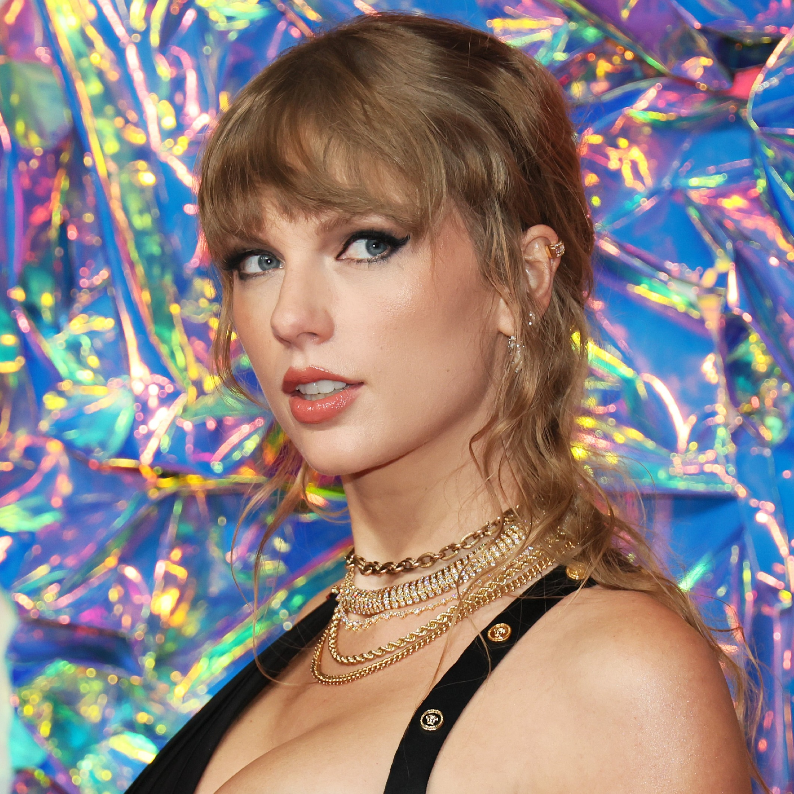

Quem é Taylor Swift?A musicista começou a ganhar fama como cantora country aos 16 anosOs primeiros sucessos como “Love Story” e “You Belong With Me” atraíram tanto os fãs do country quanto do pop e ajudaram a alimentar o sucesso multiplatina de seus álbuns. |
|---|
|  Taylor Swift no VMA 2023. |
Taylor Alison Swift nasceu em 13 de dezembro de 1989, em Reading, Pensilvânia. Swift passou seus primeiros anos com seus pais, Scott e Andrea, e seu irmão, Austin, na fazenda de árvores de Natal da família nas proximidades de Wyomissing. “Tive uma infância muito mágica, correndo livre e indo a qualquer lugar que quisesse na minha cabeça”, disse ela à Rolling Stone. Ela aprendeu a andar a cavalo e até competiu por um tempo, mas logo uma paixão maior se enraizou. Swift seguiu os passos musicais de sua avó Marjorie Finlay, que era cantora de ópera profissional. Aos 10 anos, Swift cantava em vários eventos locais, incluindo feiras e concursos. Ela cantou “The Star-Spangled Banner” em um jogo de basquete do Philadelphia 76ers aos 11 anos e começou a escrever suas próprias músicas e a aprender violão aos 12 anos. Seus primeiros ídolos musicais incluíam Shania Twain e The Chicks. Para seguir sua carreira musical, Swift visitava frequentemente Nashville, Tennessee, a capital da música country. Lá, ela co-escreveu músicas e tentou conseguir um contrato de gravação. Observando sua dedicação, sua família mudou-se para a vizinha Hendersonville quando ela tinha 13 anos, na tentativa de promover a carreira do jovem Swift. Ela frequentou a Hendersonville High School antes de terminar seus estudos através do programa de educação domiciliar da Aaron Academy, uma escola cristã particular, assim que sua carreira musical decolou. |
|---|
Carreira Musical Ela passou o início de sua carreira como musicista country, e seu primeiro single, “Tim McGraw”, recebeu o nome de uma das maiores estrelas do gênero. A música de 2006, que ela escreveu em sua aula de matemática do primeiro ano, se tornou um hit Top 10 na parada country da Billboard, lançando rapidamente Swift para o centro das atenções. McGraw e sua colega cantora country Faith Hill até trouxeram Swift em sua turnê Soul2Soul no ano seguinte como banda de abertura. Relembrando a turnê anos depois, McGraw disse ao ET Canada: “Faith e eu sabíamos que não havia como pará-la. Ela é um talento especial.” Não demorou muito para que Swift começasse a receber elogios da crítica por seu trabalho. A adolescente ganhou o prêmio Horizon da Country Music Association (CMA) e o prêmio da Academy of Country Music (ACM) de melhor nova vocalista feminina em 2007. No ano seguinte, ela foi indicada como melhor nova artista no Grammy. Ela se tornou a artista mais jovem a ganhar o Grammy de Álbum do Ano, por Fearless, em 2010. A queridinha da música country finalmente começou a experimentar o gênero. Com seu quinto álbum, 1989, ela se reintroduziu decisivamente como musicista pop. Seu novo som empolgou os fãs, e o lançamento de 2014 é um dos mais bem-sucedidos até agora, passando 11 semanas no topo da Billboard 200 e vendendo mais de 1,2 milhão de cópias na primeira semana. Nem tudo em sua música mudou, no entanto. Experiências pessoais, incluindo seus relacionamentos românticos, continuam a alimentar as composições de Swift. “Sou fascinado por relacionamentos e adoro o drama neles, mas geralmente é aí que ele reside”, disse Swift à Rolling Stone em 2009, afirmando “Não sou uma pessoa dramática”. Dificilmente o primeiro músico a utilizar essa prática, a estrela pop geralmente não revela quem são os temas de suas músicas, a menos que sejam familiares ou amigos. Em vez disso, seus fãs leais ficam obcecados com os ovos de páscoa em suas letras e videoclipes para identificar uma pessoa provável. |
|---|
© Copyright 2023. Todos os direitos reservados.